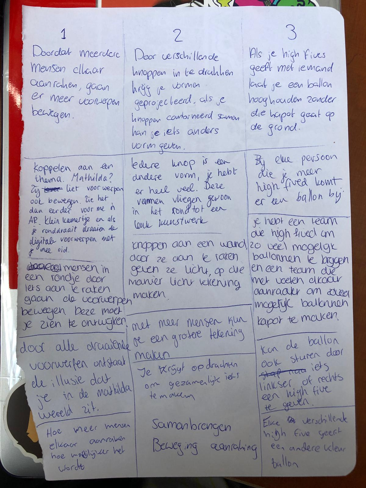
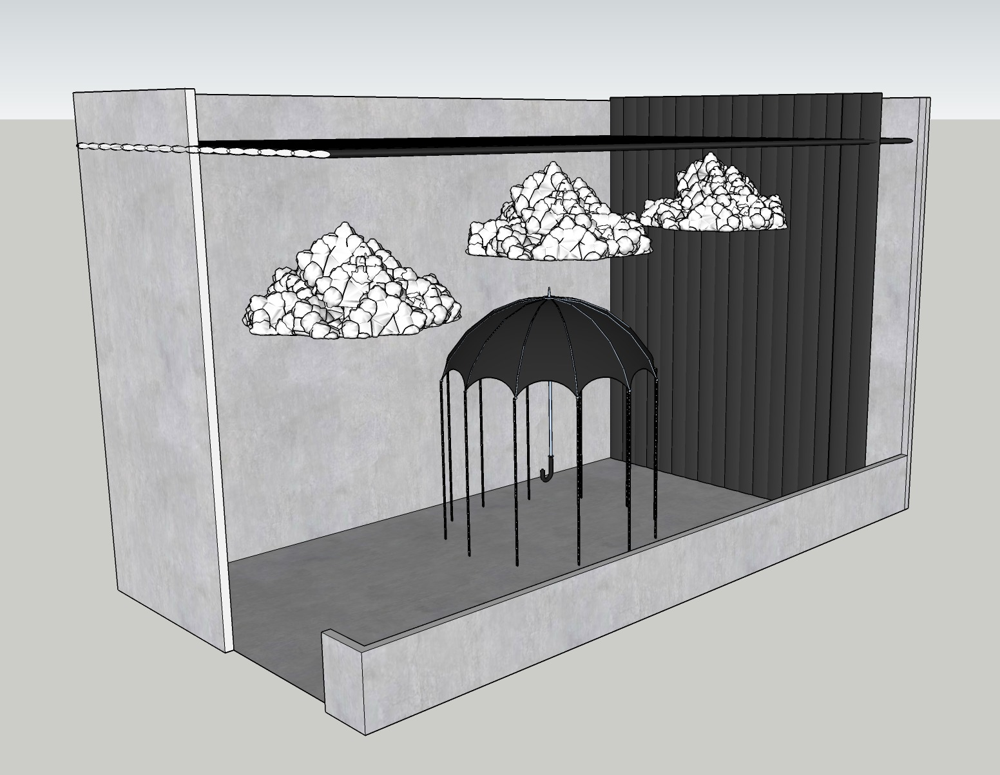
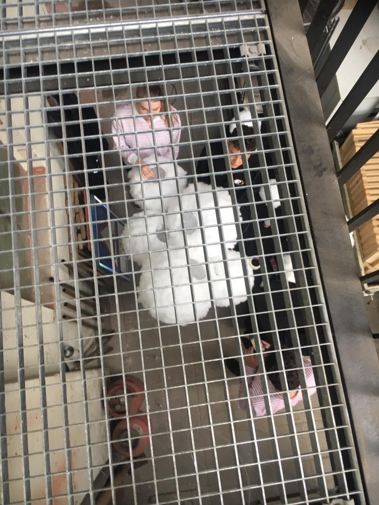

Lieke Driesse
HCI Portfolio
Op deze website is mijn proces binnen het vak Human Computer Interaction Technologies te volgen. In dit portfolio staan opdrachten, onderzoek, reflecties en resultaten van de lab weeks. Mijn naam is Lieke, ik ben negentien jaar en tweedejaars CMD-student. In mijn vrije tijd ben ik graag met vrienden of bezig met fotografie. Tijdens dit vak ga ik kennis maken met nieuwe technieken en daar heb ik veel zin in, ik kijk er naar uit om twee weken lang bezig te zijn met een zelfbedachte installatie en alles zelf uit te mogen werken. Ik hoop veel te leren op het gebied van elektronica, technieken en ik hoop zelf een tof concept neer te kunnen zetten tijdens de lab weeks.
Topics
Wearables
Het eerste onderwerp gaat over draagbare elektronica: handige gadgets die de gebruiker op de hoogte houden van de gebeurtenissen in de omgeving of in het lichaam. Ik zal hier een stukje onderzoek naar doen, een opdracht over maken en beschrijven wat draagbare elektronica voor mijzelf betekent.
Ik ben zelf erg gefascineerd door smart tattoos. Vooral de smart tattoos die wat bijdragen aan de gezondheid van de gebruiker vind ik interessant. Tattoeages decoreren een lichaam, maar kunnen dus ook andere functies hebben, zoals het meten van het bloedsuiker (wat handig is voor diabeten), maar ook het veranderen van kanaal op de televisie. Naast dat het aan de gezondheid kan bijdragen, kan het ook sociale interactie tussen mensen stimuleren. Er is een groep PhD studenten die samen met Microsoft Researches een aantal toffe wearables hebben uitgevonden. Een van deze wearables is een smart tattoo, genaamd DuoSkin. Met deze smart tattoo is het mogelijk om data op te halen en de tattoo als trackpad te gebruiken en daarmee je smartphone te besturen. Ook verandert de tattoeage van kleur op basis van de temperatuur. Het is zelfs mogelijk om een paar LED lichtjes in de tattoo te verwerken, wat ik zelf onvoorstelbaar en zo tof vind. De functie binnen de tattoo om sociale interactie tussen mensen te stimuleren, gaat via een NFC tag. In deze tag zitten kleine microchips die data kunnen opslaan en naar apparaten kunnen sturen. Ze hopen dit in de toekomst te kunnen uitbreiden naar data van ov-chipkaarten, identiteitskaarten en bioscooptickets. Deze functie met de NFC tag zou sociale interactie kunnen stimuleren, omdat de data snel verzonden kan worden en gesprekken zo soepeler en sneller verlopen
Bronnen Inside4Tech
Wearables dragen bij aan onze gezondheid. Denk aan een tracker, zoals de FitBit. We kunnen hiermee onze stappen tellen, hartslag meten, het aantal slaapuren bijhouden en op die manier bijhouden of we goed op weg zijn. Een ander voorbeeld zijn smartwatches, zoals de Apple Watch. Er kan ook makkelijker gedacht worden, gehoorapparaten zijn namelijk ook wearables: ze maken het mogelijk om beter te kunnen horen en dragen daardoor bij aan onze gezondheid. Wearables worden steeds functioneler uitgebracht en daarbij wordt ook gelet op de draagbaarheid. Er worden ringen, kleding en schoenen met daarin elektronica verwerkt uitgebracht. Wat ik zelf zo leuk aan wearables vind, zijn de nieuwe functies die worden toegevoegd. We zitten nu in de periode dat er zoveel nieuwe technologische toepassingen worden bedacht en uitgewerkt, ik sta elke keer nog versteld van de nieuwe uitvindingen. Ik vind de schoenen van PizzaHut waarmee je pizza kan bestellen geniaal bedacht, maar er worden ook functies bedacht die echt een toegevoegde waarde hebben aan het leven van de gebruiker. Zo heeft het merk Garmin laatst een nieuwe functie aan hun smartwatch toegevoegd: vrouwelijke gebruikers kunnen hun menstruatie cyclus erin bijhouden. Gebruikers kunnen de lengte van de cyclus vastleggen of symptonen vastleggen. Ook krijgt de gebruiker korte stukken informatie over haar cyclus met daarin ook tips over voedsel, beweging, etc. Een andere wearable dat bijdraagt aan de gezondheid van de gebruiker is de CareWear Light Patch. Geblesseerde sporters en atleten kunnen met deze patch beter herstellen en blijven sporten. In de patch zit namelijk blauw en rood licht wat de blessure sneller heelt, hierdoor herstelt de sporter sneller. De patch moet worden aangebracht op het pijnlijke lichaamsdeel, worden aangesloten op de oplader en dan kan de gebruiker langzaamaan gaan sporten.

Bronnen: TechCrunch Wearable Technologies Hoorcollege Wearables – Tim van den Bosch – 24 april 2019
Ik denk dat wearables nog een grote toekomst voor zich hebben en in allerlei gebieden kunnen worden ontwikkeld. Ik vind ze een goede toegevoegde waarde aan het huidige leven, vooral het punt dat ze voor ondersteuning kunnen zorgen. Ik heb zelf nog geen wearable, maar zit er wel een tijdje over na te denken om een smartwatch of FitBit te kopen. Ik ben best benieuwd naar het aantal stappen dat ik dagelijks zet en zou op sommige momenten ook best mijn hartslag willen kunnen meten. Tegenwoordig willen we alles weten en ontwikkelen we daar nieuwe technologie voor. Wearables voegen hier zeker iets aan toe, maar ik hoop dat we er in de toekomst niet al te veel in doordraaien. Ik vond de Google Glass heel gaaf, maar toch ook nog een beetje eng en ik snap dat dat geen enorm succes is geworden. Smart Contact Lenses gaan mij bijvoorbeeld echt een stap te ver. We moeten het allemaal wel menselijk houden, maar zolang wearables een ondersteuning kunnen zijn vind ik het een hele mooie technologie.
Playful Interactions
De installatie is een digitale wand waar de ene gebruiker complimenten naar de andere gebruiker kan swipen en ‘gooien’. Op het scherm zien de gebruikers zichzelf door een camera en staan er al complimenten klaar in figuren die de gebruiker met beweging naar de ander kan swipen. De installatie is dus multi-player, cooperative, parallel knowing, shared space en shared body. De interactie tussen de gebruikers en het system: het systeem herkent beweging en koppelt die aan de figuren met complimenten. Wanneer de gebruiker dus een vegende beweging van een figuur naar de andere gebruiker maakt, speel het systeem hierin mee en wordt de figuur ook daadwerkelijk naar de andere gebruiker gestuurd. Met deze playful interface wordt positief gedrag gestimuleerd, omdat mensen elkaar sneller een compliment geven wanneer ze langs de installatie lopen. De input technology gaat via beweging van de gebruiker, deze wordt opgenomen door de webcam in het scherm en infrared sensors die beweging detecteren. De output wordt op het scherm weergegeven, namelijk de beweging van de complimenten tussen de gebruikers. Er zal ook een geluid te horen zijn wanneer het compliment gestuurd en ontvangen wordt. Doordat de complimenten altijd te geven zijn, is de installatie open-ended.
Op zoek naar een playful interface die ik nog niet eerder had gezien, kwam ik de Ambianti Tiles tegen. Deze interface is ontwikkeld door Ambianti B.V., een bedrijf dat high tech materiaal ontwikkelt voor dagelijkse activiteiten. Het bedrijf vestigt zich in Eindhoven. Ambianti Tiles bestaat uit een plafond vol lampen die vanuit een mobiel apparaat bediend kunnen worden. Op een apparaat kunnen dingen geschreven of getekend worden, dat vervolgens op het plafond verschijnt. Ook de helderheid kan met een swipe aangepast worden. De gebruiker heeft de controle over elke ledlamp en kan hiermee nieuwe patronen maken en je creativiteit de vrije loop laten. Hierdoor wordt de fysieke aanwezigheid van de gebruiker in een interactie met licht omgezet. De input wordt dus gedaan door de gebruiker met een mobiel apparaat door middel van de Ambianti app, waarmee hij de lampjes kan besturen. De output wordt vervolgens in het plafond zichtbaar in de vorm van ledlampen. Deze playful interaction zou met meerdere personen gedaan kunnen worden, maar is makkelijker wanneer één persoon het speelt, aangezien het lichtpatroon vanaf één apparaat gemaakt wordt. Het is geen concurrerend spel, maar is ontwikkeld om de creativiteit van de gebruiker te laten lopen en daardoor creatiever te worden. De gebruikers zouden kunnen samenwerken, door bijvoorbeeld samen een patroon te bedenken. Echter is het, zoals eerder benoemd, eerder ontworpen voor een single player. De installatie valt onder interdependent actions bij shared object en shared space, wanneer de app door meerdere gebruikers wordt gebruikt, delen ze het mobiele apparaat met Ambianti applicatie en de ruimte van het plafond.
 Bronnen: Ambianti
Bronnen: Ambianti
Ik vind playful interfaces altijd erg interessant. Vooral het feit dat ze informatieve stof op een speelwijze op de gebruiker kunnen overbrengen spreekt mij erg aan. Ik ben een paar keer op de Dutch Design Week Eindhoven geweest en daar zijn ook altijd een aantal playful interfaces die ik altijd leuk vind om te doen en interessant vind om te bekijken. Ik denk dat we wel meer gebruik mogen maken van playful interfaces, omdat het ook heel leerzaam kan zijn. Kinderen zouden er op een speelse manier door kunnen leren, het zou afleiding kunnen bieden voor patiënten in een ziekenhuis, of positief gedrag kunnen stimuleren. Ik hoop dat er in de toekomst nog meer playful interfaces worden ontwikkeld en het lijkt me erg leuk en interessant om daar zelf aan mee te werken.
Artificial Creatures
Het homeostasis model geeft een overzicht van de benodigdheden voor een persoon of object om in balans te komen en om in die balans te blijven. Een mens heeft bijvoorbeeld de elementen honger, temperatuur en hormonen, zolang deze in balans zijn zal de persoon zich goed voelen. Een scheerapparaat heeft bijvoorbeeld elementen als energie, haar en veiligheid nodig om in balans te blijven. De benodigdheden per object of persoon worden door eigen acties of prikkels van buitenaf beïnvloedt. Ik zal het homeostasis model op een fiets toepassen. De behoefte van de fiets is om vooruit te gaan, te bewegen en dit vooral op een veilige manier te doen. Hier is energie voor nodig, dit gebeurt bij een fiets door middel van de persoon die zich erop bevindt. Deze persoon beweegt de trappers, waardoor de fiets naar voren komt en kan rijden. Bij een normale fiets is deze persoon de enige bron van energie, echter zijn er ook elektrische fietsen die met hulp van een accu nog iets sneller kunnen rijden. Dit biedt ook ondersteuning voor de persoon op de fiets. De persoon die aan het fietsen is heeft nog meer invloed dan het geven van energie, diegene bepaalt namelijk ook welke kant de fiets op gaat door het stuur naar links of rechts te bewegen. Naast het geven van energie door de trappers te bedienen, kan een fiets ook worden afgeremd. Dit is een deel van de veiligheid: in een gevaarlijke situatie of wanneer de persoon van de fiets af wilt stappen, is het nodig om vaart te minderen en tot stilstand te komen. Ook met lichten op de fiets, wordt fietsen een stuk veiliger. Het voor- en achterlicht zorgt ervoor dat andere verkeersdeelnemers de fiets in het donker ook kunnen zien. Zo kan er rekening mee worden gehouden en worden gevaarlijke situaties deels voorkomen. De fiets zelf heeft dus niet veel invloed op zijn eigen acties, maar wordt vooral beïnvloed door de persoon die de fiets bestuurt.
Bij artificial creatures gaat het er vooral om om emotie te geven aan een computer. Dit kan bijvoorbeeld gebruikt worden om robots persoonlijker en menselijk te maken, maar kan ook in games en films worden toegepast. Toen ik op zoek ging naar een project was ik erg benieuwd in hoeverre aritificial intelligence wordt toegepast. Ik kwam een TedTalk tegen van Rana el Kaliouby, zij is een egyptisch-amerikaanse computerwetenschapper die zich erg op technologieontwikkeling en expressieherkenning richt. Toen zij van Egypte naar Engeland verhuisde om daar een PhD-programma te volgen, miste zij haar familie en vrienden in Egypte heel erg. Ze merkte op dat ze veel meer met haar laptop was, dan dat ze bij andere mensen was, waardoor ze zich eenzaam voelde en heimwee kreeg. Ze kwam erachter dat haar laptop niet wist hoe zij zich voelde: het apparaat kon alles voor haar doen, maar wist niet of ze blij was of dat ze een moeilijke dag had. Samen met haar team ging ze aan de slag met een onderzoek naar expressieherkenning met de focus op het menselijk gezicht. Door een systeem duizenden voorbeelden van glimlachende mensen van verschillende etniciteit, leeftijd en geslacht te geven, gaat het systeem hier een patroon in ontdekken. Rana el Kaliouby en haar team gaven de algroritmen deze voorbeelden van elke emotie. Op deze manier konden de algoritmen bij een nieuw gezicht zelf de emotie van die persoon bepalen. De TedTalk komt uit 2015, op dat moment bestond de emotiedatabase uit 12 miljard gegevens, o.a. 2,9 miljoen filmpjes van menselijke gezichten uit 75 landen. Met deze technologie is veel mogelijk. Zo zijn er brillen met emotietechnologie die het mogelijk maken dat mensen met een visuele handicap de emotie van anderen alsnog kunnen lezen. Ook mensen met autisme kunnen hiermee makkelijker de emoties van anderen lezen. Een idee voor de toekomst dat Rana el Kaliouby noemt: apps van scholen die door middel van emotietechnologie kunnen zien of de gebruiker (student) de leerstof snapt en daardoor de snelheid van de les kunnen aanpassen. Rana el Kaliouby zei in de TedTalk dat ze dacht binnen vijf jaar een emotiechip in elk apparaat te willen hebben. Het is inmiddels vier jaar na de TedTalk en er zijn naar mijn weten nog geen emotiechips in omloop. Het lijkt mij echter enorm interessant als dit wel zou worden toegepast. Ik kijk uit naar de toekomst en ik ben benieuwd hoe dit zich verder gaat ontwikkelen.
Bronnen: TedTalk Rana el Kaliouby Hoorcollege Artificial Creatures – Chris Heydra – 8 mei 2019
Na het zien van de TedTalk ben ik erg geïnteresseerd geraakt in het project waar Rana el Kaliouby aan werkt. Ik heb een nieuwe fascinatie voor emotietechnologie en ik ben erg benieuwd waar dit in de toekomst heengaat. Emotietechnologie zou een grote bijdrage kunnen zijn in de samenleving, zoals in het vorige deel beschreven voor scholieren of mensen met autisme. Ik kan me voorstellen dat het ook een toegevoegde waarde in de ouderenzorg zou kunnen zijn. In mijn eigen leven maak ik nu geen gebruik van emotietechnologie, maar ik denk dat ik het zeker wel zal gebruiken zodra het wordt gelanceerd en betaalbaar is.
AR&VR
Augmented Reality en Virtual Reality zijn op veel vlakken toe te passen. Het wordt bijvoorbeeld steeds vaker op scholen of in de zorg gebruikt. Ik heb drie kleine concepten voor verschillende werkgebieden bedacht.
Musea De eerste is een concept voor kunst en cultuur, die gebruikt kan worden bij het bezoeken van musea. Wanneer de bezoeker/gebruiker een kunstwerk scant, verschijnt er meer achtergrondinformatie over de kunstenaar, kunstwerk, kunststijl, etc. Ook kan de gebruiker zijn eigen versie van het kunstwerk maken.

Educatie
Als tweede concept heb ik iets voor scholen bedacht. Kinderen hebben van zichzelf al een rijke fantasie, maar om dit te benadrukken of te kunnen beleven kunnen ze zich in een wereld wanen waar op dat moment les in word gegeven. Basisscholen werken vaak in een soort themaweken, zoals Oorlog, Lente, Afrika, Pasen, etc. Met dit Virtual Reality concept kunnen kinderen beter kennis maken met dit onderwerp en meer leren. Hieronder staat een moodboard met voorbeelden wat de kinderen binnen de virtual reality wereld zouden kunnen zien.

Therapie
Voor het therapie werkgebied zou virtual reality ook goed gebruikt kunnen worden om angsten te overwinnen. Door ze in deze wereld te laten wanen kunnen ze langzaam kennismaken met de positieve kant van hun angst en overtuigd worden dat bang zijn nergens voor nodig is. Hieronder staat een moodboard met voorbeelden van angsten waarmee ze geconfronteerd zouden kunnen worden wanneer ze de VR-bril ophebben.

Augmented reality is letterlijk vertaald toegevoegde realiteit. Aan een beeld van werkelijkheid worden elementen met een computer toegevoegd. Iedereen kent de game Pokémon Go, dit is een voorbeeld van augmented reality. Ook met apps van o.a. Flexa kan je door middel van augmented reality kijken of een kleur mooi zal staan op een muur. Virtual reality is een een gesimuleerde werkelijkheid. Door middel van bijvoorbeeld een VR-bril kan de gebruiker zich in een andere wereld wanen. Hiermee kunnen games intenser worden en zit de gamer echt in de wereld van de game. Naast een entertainende functie, wordt virtual reality ook toegepast in educatie en zorg. Ik kwam het bedrijf The Virtual Dutch Men tegen en zij doen veel toffe projecten met zowel VR als AR. Een project van hun dat ik erg vernieuwend en leuk vind is de samenwerking van The Virtual Dutch Men met bouwbedrijf Roosdom Tijhuis. TVDM (The Virtual Dutch Men) heeft een virtual reality simulatie voor hun ontwikkeld waarmee kopers van een nieuwbouwhuis hun toekomstige huis al kunnen inrichten. Op deze manier komen ze niet voor verrassingen te staan met bijvoorbeeld kleuren, vloeren, plaats van stopcontacten etc. Als de koper de VR-bril op heeft tijdens een gesprek met de makelaar, kan de makelaar live aanpassingen maken na het krijgen van opmerkingen over afbouwopties. Met de VR-bril krijgen de kopers een levensechte indruk over hun toekomstige huis. Ze zijn nu ook bezig met updates voor de virtual reality, in de toekomst is het bijvoorbeeld ook mogelijk om het huis virtueel in te richten en gebruik te maken van interactieve elementen.
Bronnen: The Virtual Dutch Men Roosdom Tijhuis
Augmented Reality was eerst nog een onbekend vak voor mij, maar ik vind het na het hoorcollege en het maken van de opdrachten heel interesssant. Vooraf vond ik het allemaal vaag en lastig, maar nu ik weet hoe handig het toegepast kan worden en mensen er ook van kunnen leren vind ik het een hele toffe uitvinding. De projecten die ik tijdens de research ben tegengekomen hebben me geinspireerd en het lijkt me leuk hier later zelf ook een aantal projecten mee te doen, zodat ik er nog meer van kan leren.
Workshops
Arduino
Tijdens twee workshops heb ik kennis gemaakt met Arduino. Ik vind het een lastige, maar vooral interessante programmeertaal en ik ben erg enthousiast over het feit dat het nu niet enkel programmeren is in de vorm van een website, maar er letterlijk voorwerpen gebouwd en bewogen mee kunnen worden.
Klik hier om naar de opdrachten te gaan.
VR Environments
Met het programma Unreal Engine is het mogelijk om virtuele werelden te maken. Het programma MadMapper kan projecties op 3d-vlaktes afbeelden. Met deze twee programma's heb ik ook opdrachten gemaakt. Klik hier om de opdrachten te bekijken.
Computer Vision
Met het programma Processing is het mogelijk om interactieve elementen te programmeren en animeren. Zo kunnen concepten ook verder ontwikkeld worden. De programmeertaal lijkt op Java, maar is makkelijker te leren. Hierdoor kunnen ook mensen zonder programmeer ervaring gemakkelijk hun concepten weergeven. Voor deze opdracht doe ik een aantal opdrachten in Processing, deze zijn te vinden op de pagina die opent met onderstaande link.
Klik hier om de opdrachten te bekijken.Excursion
Assignments
Als excursie gingen we met alle CMD en UXD studenten naar NEMO, het sciencemuseum in Amsterdam. Ik ben hier vroeger al eens geweest als kind en weet nog dat ik dat allemaal superleuk en interessant vond. Ik ben benieuwd hoe ik het nu ga vinden en of het veel veranderd is, ik verwacht wel veel meer technologie namelijk. NEMO is heel leuk om in te experimenteren, dit maakt het voor kinderen ook zo leuk om te leren. Je kan veel zelf doen: spellen spelen, enorme bellen blazen, zelf dingen uitvinden, bouwen en vooral veel ontdekken. Terwijl ik NEMO doorliep zag ik een installatie die mij erg aansprak. Er was een spel waarmee kinderen kometen en brokken stenen konden tegenhouden voordat ze zich op de aarde zouden storten. Door een plank vast te houden konden ze door een ruimte rennen om zo op dezelfde plaats als de komeet te komen, hierdoor kwam de komeet op de plank terecht in plaats van de aarde. Volgens mij heeft dit spel geen bewustmakende functie, maar is het vooral een leuk spel. Het laat de kinderen als het ware ‘vechten’ om de wereld te redden, dus krijgen ze wel mee hoe belangrijk onze planeet is. Dit spel is onderdeel van de Life in the Universe tentoonstelling. Het interactieve spel laat de kinderen samenwerken, want met hun planken kunnen ze de wereld beschermen van kometen, meteorieten en UV straling. Qua technologie vind ik het erg interessant hoe het gemaakt is. De planken worden op het scherm herkend als beschermende factoren van de wereld. Er zullen sensoren in zitten, die ik zo niet op zou kunnen noemen. Misschien dat ze door middel van een afstandsensor meten welke kant de kinderen oprennen met de plank. In het filmpje is te zien hoe het spel werkt.
Reflect
Ik vond de excursie naar NEMO erg leuk, ik vond het vooral leuk om te zien dat er veel veranderd was sinds ik er voor de laatste keer was geweest. De manier hoe technologie steeds meer wordt toegepast vind ik erg interessant. Het spel waarin kinderen de wereld moeten beschermen van kometen en meteorieten vond ik heel leuk bedacht. Vroeger werd ik ook helemaal enthousiast van dit soort leerzame spellen. Dat dit nu ook mogelijk is in musea en ik een studie doe waar ik leer om zulke concepten te bedenken vind ik erg leuk.
Lab weeks
Twee weken lang ga ik samen met een groepje een interactieve installatie bedenken en maken. Deze zullen we tentoonstellen tijdens de expositie. De weken vullen zich met brainstormen, schetsen, testen en veel uitproberen. Kijk hieronder de aftermovie en lees daaronder een day-to-day rapport!.
De aftermovie
Helaas doet de aftermovie het waarschijnlijk niet wanneer u hieronder op de video klikt. Door de video in YouTube zelf te laten openen, doet deze het wel gewoon! Voor de zekerheid kunt u anders hier klikken naar de video. De link opent op een nieuwe pagina.
Dagverslagen
Dag 1 - Maandag 3 juni
Vandaag was de start van de HCI labweken. Nog half in dromenland zaten we allemaal om 8.45 uur in de ruimte in Maakhaven. Ik was benieuwd naar de groep waar ik zou mee gaan werken en vooral of ik bij mijn eerste keus qua onderwerp zou zitten. Nadat Chris de dag geopend heeft en alles nog heeft uitgelegd, krijgen we onze groepjes en onderwerp te weten en zoeken we elkaar op. Ik ben blij met mijn groepjes, want het blijkt al snel dat we allemaal iets moois willen neerzetten aan het eind van deze periode. We maken ons scrumboard en doen een brainstorm over wat ons leuk lijkt. Omdat we ons nog niet op een bepaald idee willen vastklemmen, gaan we experimenteren met de verschillende elektronica. Helaas is al veel uitgeleend, dus besluiten we dit morgen te doen en nu met onze eigen Arduino sets aan de slag te gaan. We weten namelijk al wel dat we iets met aanraking, licht en geluid willen doen, dus dit kunnen we alvast oefenen.
© Rowan de Maa
© Lieke Driesse
© Lieke Driesse

© Julia de Jong
© Lieke Driesse
Dag 2 - Dinsdag 4 juni
De tweede dag, vandaag kunnen we hopelijk de MakeyMakey en het Touchboard testen. We zijn hier erg benieuwd naar, want we denken dat dit goed voor ons mogelijke concept zou kunnen werken. Het touchboard laten we werken met de electric paint, we zijn hier heel enthousiast over en besluiten dat we dit graag in ons concept willen gebruiken. Na de lunch komt er een gastspreker langs, Vincent Lindeboom van Next Empire uit Amsterdam. Hij vertelt over veel interessante projecten en ik ben erg onder de indruk aan het eind van zijn lezing. Vooral de projecten Moord in Artis en de Zoetrope die ze voor de Efteling hebben gemaakt vond ik heel erg leuk, ik krijg er inspiratie van en ik hoop dat ik de Moord in Artis zelf een keer kan doen. Na de lezing storten we ons weer op Arduino om licht en geluid tegelijk te laten werken bij aanraking. Dit vraagt veel concentratie en aandacht, maar uiteindelijk lukt het met een beetje hulp van Chris en vooral het zelf volgen van tutorials op internet. We zijn nog niet veel verder met het concept, maar maken hier ons nog niet veel zorgen om.
© Lieke Driesse
© Lieke Driesse
© Lieke Driesse
© Lieke Driesse
Dag 3 - Woensdag 5 juni
Woensdagochtend, de middelste dag van de werkweek. We zijn allemaal moe, maar wennen langzaam aan de lange dagen en het vroege opstaan. We beginnen de dag gezamenlijk met alle studenten tijdens de opening, waarna we vervolgens een daily stand up doen. We willen beginnen waar we gistermiddag geëindigd zijn, dat betekent dat we verdergaan met Arduino. We zijn met een groepslid minder, want Mathijs is helaas ziek. Jammer, want we willen vandaag ook het concept iets concreter maken. Met z’n vieren maken we een taakverdeling: Sanne en Rowan gaan aan de slag met Arduino en ik ga samen met Julia naar de Gamma om alvast wat materiaal te kopen. Na de lunch gaan we met z’n allen verder met Arduino en lopen we een beetje vast op wat mogelijk is en wat wij kunnen. We krijgen hulp van student assistent Tim en dankzij hem begrijpen we de code iets beter. Echter hebben we er rond 14.00 uur allemaal niet veel zin meer in, omdat we even niet weten wat we moeten en kunnen doen. Na een tijdje treuzelen en code testen krijgen we ineens allemaal weer energie en een creatieve ingeving. Dit doet ons besluiten om nu het concept uit te werken. Hiervoor wisten we alleen dat we door middel van beweging geluid en licht willen maken en dat het ons leuk lijkt om iets in het donker te maken. We willen iets maken voor de ervaring, het hoeft niet per se nuttig te zijn. Rowan komt met het idee om spiegels te gebruiken en ineens krijgen we allemaal ideeën, we hebben het over o.a. illusies en windorgels. Als concept komen we uit op een weerkamer, we willen een storm simuleren en kijken naar de mogelijkheden en het materiaal wat we hiervoor willen gebruiken. We vertellen ons concept aan docent Tim en hij is ook enthousiast, samen bekijken we de andere expositieruimte en we claimen gelijk een halletje. Deze kunnen we goed donker maken. Eenmaal terug bij de tafel gaan we aan de slag met de mogelijke materialen, hoe we de techniek moeten doen en wat we nodig hebben. We doen een bestelling bij TinyTronics, zodat we morgen aan de slag kunnen.
© Julia de Jong
© Rowan de Maa
© Lieke Driesse
© Lieke Driesse
© Lieke Driesse
Dag 4 - Donderdag 6 juni
De vierde dag, we zijn van plan om veel te doen vandaag: materiaal kopen, wolken maken en de bestelde lampjes testen. De dag begint zoals gewoonlijk met een daily standup en vervolgens krijgen we een gastlezing van Teun Verkerk, hij maakt interactieve objecten en is tegelijk architect. Hij heeft veel projecten gedaan en organiseert een lichtfestival van kunstenaars en ontwerpers in Delft. Tijdens zijn lezing laat hij veel projecten zien en vertelt hij wat verhalen over zijn ontwerpen, vooral de Buqs krijgen veel aandacht. Het is interessant maar ik merk dat alle studenten, inclusief ikzelf, niet alle concentratie erbij hebben. Na de lezing vertrekken Julia en ik naar de winkels om materiaal voor de wolken te halen, dit verloopt allemaal soepel en rond 12.30 uur zijn we weer terug. We houden even een lunchpauze en vervolgens gaan Julia en ik aan de slag met de wolk. Dit verandert al snel in een tegenslag, ondanks dat we een tutorial volgen. Het blijkt dat het geen stevige wolken worden als we zo doorgaan met deze materialen en we besluiten een alternatief te zoeken. Mathijs komt uit op een andere tutorial waarin ze gebruikmaken van lampionnen als basis. Dit lijkt ons een goede oplossing en na even nadenken bestellen we ook lampionnen, daar kunnen we morgen gelijk mee aan de slag. Naast het maken van de wolk, werkt Sanne het concept digitaal uit, waardoor we allemaal hetzelfde beeld erbij krijgen. Hiermee kunnen we het voortaan ook makkelijker uitleggen aan de docenten en student assistenten. Voor mijn gevoel hebben we vandaag niet zoveel gedaan, in ieder geval geen resultaat bereikt en er is minder gelukt dan we hadden gepland. Toch hebben we vandaag veel geleerd, doordat we erachter kwamen dat onze eerste versie van de wolk geen succes zou gaan worden.
we morgen aan de slag kunnen.© Sanne van Zeijl
© Sanne van Zeijl
© Lieke Driesse
© Lieke Driesse
Dag 5 - Vrijdag 7 juni
We zijn op de helft vandaag, vier dagen gehad en na vandaag nog vier dagen te gaan. We hebben grote plannen voor vandaag, zeker omdat gisteren niet zoveel is gelukt. Na de gastlezing van Marcello Gomèz Maureira, die erg leuk en inspirerend was en over playful ontwerpen ging, gingen wij gelijk aan de slag met ons project. We moesten wachten op de bestelling met lampionnen, dus voordat we de wolken konden maken gingen we aan de muziek werken en brainstormen over het interactieve element. Gelukkig waren de lampionnen er voor 12.00 uur, dus hadden we alle tijd om de wolken te maken. We maken vandaag 1 wolk om te testen of dat goed werkt met de lampjes. Rowan krijgt het voor elkaar om de lampjes random aan te laten gaan. Wanneer we de lampjes in de wolk doen is het precies zoals we gehoopt hadden, we worden allemaal enthousiast en ook Tim en Chris zijn heel geïnteresseerd in ons project, dit zorgt voor nog meer motivatie bij ons. Aan het eind van de dag mogen wij onze wolk aan alle studenten presenteren. Heel leuk, want wanneer de wolk aan gaat is iedereen verbaasd en enthousiast over hoe het eruit ziet. Heel de zaal vult zich met ‘Oh’s’ en ‘Aaah’s’, heel leuk om zulke positieve feedback te ontvangen.
© Julia de Jong
© Julia de Jong
© Lieke Driesse
Dag 6 - Dinsdag 11 juni
Na een lang weekend gaan we verder aan het project. Ik haal een bestelling op, zodat we de andere wolken kunnen maken. De anderen zijn bezig met het laten werken van de lampjes in de wolken, de ledregen en het uittesten van de solenoid sensor. Na veel testen en hulp van Chris lukt het om de solenoid te laten werken. Deze willen we op de paraplu bevestigen, door het getik lijkt het dan alsof er regen op valt. Tussendoor werkte Mathijs verder aan de muziek en na een paar keer feedback gegeven te hebben, hebben we ook een mooie track om af te spelen tijdens de experience. Er is veel gelukt vandaag: de ledjes passen in de wolk, de ledregen ‘druppelt’, de wolken zijn af, de solenoid sensor werkt en we hebben muziek! Tegen het eind van de dag hebben we nagedacht over hoe we de constructie willen bouwen en bevestigen. Na deze brainstorm hebben Sanne en ik hier het eerste materiaal voor gehaald: verf en een plank. Hier kunnen we morgen gelijk mee aan de slag.
© Lieke Driesse
© Lieke Driesse
© Lieke Driesse
Dag 7 - Woensdag 12 juni
De dag begon weer vroeg en mede door miscommunicatie kom ik een uurtje later aan. Het plan was dat ik nog materiaal zou halen en daardoor later zou zijn, maar eenmaal in de winkel blijkt dat dat materiaal gisteren al besteld was. Snel door naar Maakhaven en aan de slag met de rest. We willen vandaag graag duidelijk hebben hoe de constructie zal gaan zijn en hoe we dit gaan maken. Hierbij krijgen we advies van Joël en Danica, we beginnen met het idee om douchegordijnstangen tussen de muren te klemmen. Al snel stappen we hier vanaf, mede door de prijs en omdat we niet zeker weten of het echt gaat werken. We besluiten om gaatjes in de muur te gaan boren en dan een visdraad te spannen, hier kunnen we de wolken en paraplu dan aan bevestigen. Voordat we tijd hebben om te boren, gaan we de wolk in elkaar zetten. We hangen elke wolk los en dicht bij elkaar op en bevestigen ze aan elkaar met visdraad, morgen moeten we de lege gaten nog opvullen met los polyestervulling. Ik ben blij dat de wolk in ieder geval in elkaar zit, dan hoeven we deze vrijdag alleen nog maar te verplaatsen. Nu de wolk hangt, gaan Julia en ik verder met de constructie. Ondertussen is Sanne al heel de dag bezig met de paraplu en de solenoid, Mathijs met de muziek en het filmen en Rowan is bijna klaar met de ledlichtjes voor in de wolken. Julia en ik boren, onder toezicht van Joël en de eigenaar van het pand, gaatjes in de ruimte waar wij mogen exposeren vrijdag. We spannen hier een visdraadje tussen en dan is deze taak ook weer gedaan. Tot slot meten we de zwarte doeken om te checken of we de deuren kunnen afsluiten. Aan het eind van de dag bekijken we het scrumboard en beslissen we wat er morgen de belangrijkste prioriteit heeft, dat is de paraplu.
© Julia de Jong
© Julia de Jong
© Julia de Jong
© Julia de Jong
Dag 8 - Donderdag 13 juni
De dag van de deadline, vanmiddag om 17.00 uur moet het zo goed als af zijn. We hebben nog veel te doen, vooral de paraplu gaat veel aandacht vragen. Het eerste wat we doen is de wolk aanvullen met losse watten. Vervolgens moeten we de wolk gaan verplaatsen naar onze plek van de expositie. Dit vinden we allemaal spannend, want hij moet natuurlijk wel heel blijven. Julia knipt de draden waarmee hij aan de trap zit los, zodat Mathijs en ik de wolk kunnen opvangen en verplaatsen naar ons halletje. De wolk verliest veel watten, dus het aanvullen van net hadden we beter na het verplaatsen kunnen doen. Voor de rest blijft de wolk heel dus dat is een opluchting. De volgende uitdaging is het ophangen van de wolk. Dit vraagt om meerdere kansen, want de schroef springt een aantal keer uit de muur. Terwijl ik samen met Julia en docent Paul Kuijpers dit goed probeer te krijgen, zijn Sanne en Rowan met de paraplu bezig. Uiteindelijk lukt het bij de derde keer dat we een draad spannen, nu moet de wolk worden opgehangen. Met heel het groepje hangen we de wolk op. Veel werk en het moet in een keer goed gaan, maar na een tijdje knopen maken hangt ons kunstwerk aan het plafond. Lampjes erin, aanvullen met watten en de donderwolk is helemaal klaar voor de expositie. De paraplu doet het inmiddels ook zoals we willen, Sanne en Rowan hebben het voor elkaar gekregen om het te lijken laten regenen wanneer iemand de paraplu vasthoudt. We hebben veel voor elkaar gekregen vandaag en daar ben ik heel blij mee en opgelucht van.
© Lieke Driesse
© Lieke Driesse
Dag 9 - Vrijdag 14 juni
De dag van de expositie is eindelijk daar! Vandaag moeten we de paraplu afronden en ons halletje mooi maken, zodat de bezoekers er het best van kunnen genieten. Alles loopt vrij voorspoedig en daardoor helpen we ook andere groepjes met het afronden van hun projecten. Speciaal voor Chris en Tim maken we nog de wolkenhoedjes, het idee waar ze zelf mee kwamen nadat wij ze ons idee hadden verteld. Het lukt ook eindelijk om alle ledstrips werkend te krijgen vanuit dezelfde arduino, dus deze bevestigen we aan de paraplu. Nu kunnen we de paraplu naast de wolken ophangen. Dit is nog best spannend, want als de paraplu nu te zwaar blijkt te zijn voor vislijn en ijzerdraad hebben we een probleem. Gelukkig lukt het en blijft de paraplu gewoon hangen! We ruimen onze spullen op en zorgen dat alles er netjes uit ziet en dan is het tijd voor pizza! Om 16.00 uur stromen de eerste gasten van de expositie binnen en ook mijn ouders zijn er al. Ik vind het heel leuk om alle reacties van iedereen te zien. Wanneer we ons project uitleggen vinden ze vooral de donderwolk erg mooi, maar wanneer ze de paraplu vasthouden en de regen voelen zijn ze echt onder de indruk. Zelf loop ik ook nog een paar rondjes langs alle projecten, zo leuk om nu te zien wat elk groepje nu echt gemaakt heeft. Ik vind de slimme rugzak heel goed bedacht en leuk dat het een vrij realistisch product is. Ook de piano handschoenen vind ik heel tof gemaakt, net zoals de robotauto die je zelf door het doolhof heen kan sturen. Ik ben onder de indruk van wat elk groepje heeft gemaakt. Deze expositie was een mooie afsluiter van de twee intensieve weken!
© Lieke Driesse
© Lieke Driesse
© Lieke Driesse
© Lieke Driesse
© Lieke Driesse
© Lieke Driesse
© Lieke Driesse
© Lieke Driesse
Product
In bovenstaand stuk tekst is het proces van ons product te lezen. Ik zal nu nog toelichten wat ons product is. Wij wilden graag een ervaring creeeren. Alle spellen, robots en interactieve objecten vonden we allemaal heel vet, maar wij hebben vanaf dag 1 besloten dat we een ervaring willen maken waar mensen zich echt even in wanen. Tijdens een brainstormsessie hebben we het uiteindelijke concept zo besloten en uitgewerkt. In het halletje tussen twee expositieruimtes lopen mensen een storm door. De grote asthethische donderwolk laat op willekeurige momenten flitsen zien en door de paraplu vast te houden krijgen mensen het gevoel dat het regent. De stormmuziek op de achtergrond maakt de ervaring helemaal af doordat mensen soms schrikken van de donderslagen.
© Mathijs Verstegen
Reflect
Deze twee weken waren erg intensief, maar zo leuk! Ik heb er erg van genoten en dit vak zal ik niet snel vergeten. Ik vond het zo leuk om samen met mijn groepsgenoten steeds nieuwe dingen te bedenken, elektronica uit te proberen en weer wat toe te voegen aan het concept. In de lessen had ik al veel geleerd en vooral de Arduino workshops kwamen voor ons goed van pas. De gastsprekers in de eerste week gaven me nieuwe inzichten en inspiratie, vooral de lezingen van Vincent Lindeboom en Marcello Gomèz Maureira vond ik erg interessant. Doordat al mijn groepsgenoten ook net zo gemotiveerd waren als ik, konden we echt wat tofs neerzetten. Ik ben heel blij en trots op ons resultaat en de samenwerking. De reacties van de gasten tijdens de expositie gaven een bevestiging naar ons dat het echt iets moois was.